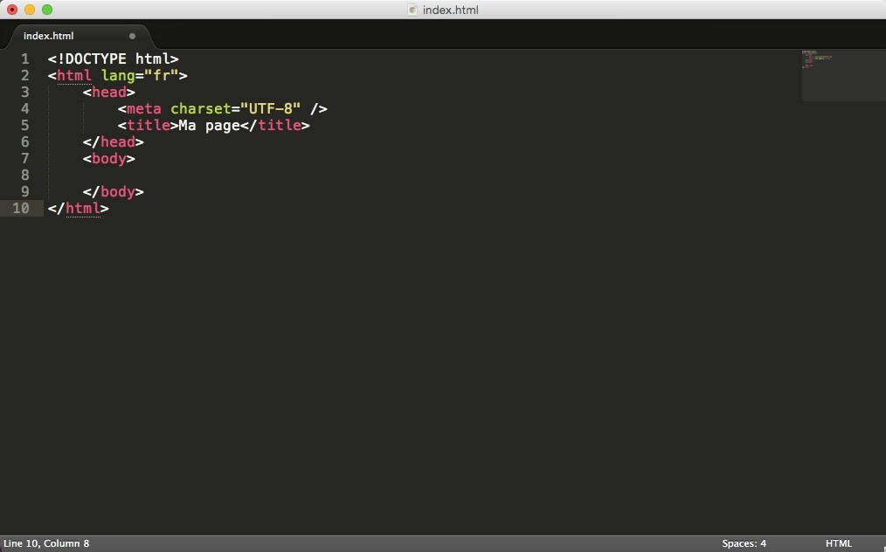

Chapitre 1 du cours html
Niveau debutant en programmation web
Le fonctionnement des sites web
- Comment fonctionnent les sites web ?
- Comment accéder a un site web
- ✓ Quelles sont les differentes parties d’une URL
- Le protocole
- Le sous-domaine
- Le nom de domaine
- Le domaine de deuxiemes niveau
- Le repertoire
Compredre le langage html et css
- Defivition des deux langages
- Les roles de HTML et CSS
L’editeur de texte pour OS et IOS
- C’est quoi un editeur de texte
- Difference entre un editeur de texte et traitement de texte
Les navigateurs
- Pourquoi les navigateur est important
- Les navigateur sur android
Le fonctionnement des sites web expand_moreexpand_less
Comment fonctionnent les sites web ?
Pour bien comprendre ce que c’est, on va tout de suite utiliser un navigateur web, alors sans le navigateur web , il n’y a pas de site web, car c’est grâce au navigateur web que nous pouvons accéder aux sites web.
Comment accéder a un site web
Pour avoir accès a un site web il vous faut le URL de ce site, sans le URL vous ne pouvez rien n’indique au navigateur comme par exemple le site de google ( https://www.google.com
Quelles sont les différentes parties d’une URL
Une URL est composée de 5 parties; le protocole, le sous-domaine, le nom de domaine principal, le domaine de deuxième niveau (SLD – Second-level Domain en anglais) et le répertoire.
Le protocole
Prénons comme exemple l'adresse suivante :
https://www.ftechplus.com/contact
Dans cette exemple le protocole est le https:// : il correspond a Hypertest Transfer Protocol Secure ( le protocole de transfert hypertexe securise) il indique a votre navigateur qu’il doit crypter, en d’autres termes dissimuler, les information sensibles qui sont entrées su votre page.
Le https vous permet d’améliorer votre référencement sur Google, et ce protocole est dons un gage de sécurité pour les visiteurs de votre site.
Le sous domaine
Dans notre exemple le sous-domaine est : www.
Il indique a votre navigateur quelle page de votre site il doit afficher. Par exemple , un sous-domaine tel que « blog » fournit la page de blog de votre site web.
De plus, les sous-domaine repartissent votre site web dans différentes catégories de contenu, et montrent à Google et à vos visiteurs qu’il contient d’avantage d’informations que simplement la page d’accueil.
Le nom de domaine principal
Dans notre exemple, le nom de domaine est : mondomaine Désormais, voyons le nom de domaine. C’est tout simplement le nom de votre site web. Il est important, car il aide les visiteurs à savoir de quoi votre site parle. Il est souvent similaire au nom de la marque. Les personnes visitant “lvmh.com” savent directement qu’il s’agit de la marque LVMH, Louis Vuitton Moët Hennessy.
Le domaine de deuxieme niveau
Dans notre exemple, le domaine de deuxième niveau est : .com Le domaine de deuxième niveau précise le type d’entité sous laquelle est enregistrée votre organisation sur internet. Par exemple, “.net” est destiné aux organisations présentant un lien avec les technologies réseau.
Le repertoire
Dans notre exemple, le répertoire est : /contact Le répertoire aide les visiteurs à comprendre sur quelle section bien précise du site ils se trouvent. L’une des URL de votre site web pourrait donc ressembler à “https://www.maboutique.com/bottes”.
Compredre le langage html et css expand_more expand_less
Definition du html et du css
HTML (HyperText Markup Language) : il a fait son apparition dès 1991 lors du lancement du Web. Son rôle est de gérer et organiser le contenu. C'est donc en HTML que vous écrirez ce qui doit être affiché sur la page : du texte, des liens, des images… Vous direz par exemple : « Ceci est mon titre, ceci est mon menu, voici le texte principal de la page, voici une image à afficher, etc. » ;
CSS (Cascading Style Sheets, aussi appelées feuilles de style) : le rôle du CSS est de gérer l'apparence de la page web (agencement, positionnement, décoration, couleurs, taille du texte…). Ce langage est venu compléter le HTML en 1996.
Les versions de HTML
HTML 1 : c'est la toute première version créée par Tim Berners-Lee en 1991.HTML 2 : la deuxième version du HTML apparaît en 1994 et prend fin en 1996 avec l'apparition du HTML 3.
HTML 3 : apparue en 1996, cette nouvelle version du HTML rajoute de nombreuses possibilités au langage, comme les tableaux, les applets, les scripts, le positionnement du texte autour des images, etc.
HTML 4 : cette version aura été utilisée un long moment durant les années 2000. Elle apparaît pour la première fois en 1998 et propose l'utilisation de frames (qui découpent une page web en plusieurs parties), des tableaux plus complexes, des améliorations sur les formulaires, etc.
HTML 5 : c'est LA dernière version. De plus en plus répandue, elle fait beaucoup parler d'elle car elle apporte de nombreuses améliorations, comme la possibilité d'inclure facilement des vidéos, un meilleur agencement du contenu, de nouvelles fonctionnalités pour les formulaires, etc. C'est cette version que nous allons découvrir ensemble.
Les versions de CSSexpand_moreexpand_less
les éditeurs de texte : ce sont des programmes dédiés à l'écriture de code. On peut en général les utiliser pour de multiples langages, pas seulement HTML et CSS. Ils se révèlent être de puissants alliés pour les créateurs de sites web !
De nombreux éditeurs de texte fonctionnent sur android (ils sont disponibles partout). Je vais vous en proposer plusieurs pour que vous ayez le choix, mais, comme je sais que vous allez me demander celui que j'utilise, je vais commencer par vous présenter... anWriter free editeur !
anWriter free editeur : mon éditeur
anWriter free editeur est un éditeur de texte devenu très populaire parmi les développeurs. On l'utilise aussi bien pour développer en HTML et CSS . Il a l'avantage d'être simple, épuré et facile à lire dès le départ. Pas de centaines de boutons dont on ne comprend pas à quoi ils servent.
Malgré les apparences, il ne faut pas croire qu'il est limité. Au contraire : il est possible de l'étendre avec tout un système de plugins. Ça devient un peu plus compliqué et on ne rentrera pas là-dedans.
Les navigateursexpand_moreexpand_less
Si votre code CSS dit « Les titres sont en rouge », alors le navigateur affichera les titres en rouge. Le rôle du navigateur est donc essentiel !
On ne dirait pas, mais un navigateur est un programme extrêmement complexe. En effet, comprendre le code HTML et CSS n'est pas une mince affaire.
Le principal problème, vous vous en rendrez vite compte, c'est que les différents navigateurs n'affichent pas le même site exactement de la même façon ! Il faudra vous y faire et prendre l'habitude de vérifier régulièrement que votre site fonctionne correctement sur la plupart des navigateurs.
Les navigateurs sur android Il existe de nombreux navigateurs différents. Voici les principaux à connaître :
- ❑ Google chrome (Os et IOS)
- ❑ Firefox mozilla (Os et IOS)
- ❑ Opera mini (Os et IOS)
- ❑ Safari ( pour IOS)